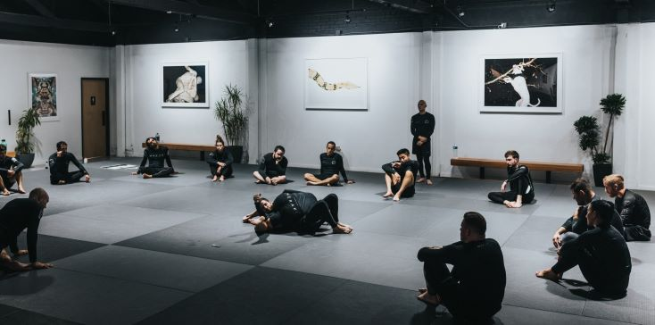
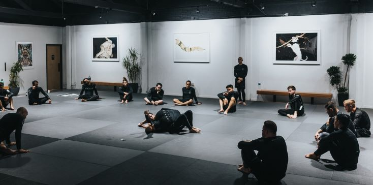

I am Sian-Tang Teng and I was born Bremen, Germany in year 1998. Moved to Hamburg and was raised ever
since then. I started Judo when I was six years old and continued it for 12 years. Judo played a big part of my
life and impacted my attitude towards work greatly.
It all started as a small hobby where I had training session once a week.
I remember learning to differentiate between left and right in one of these sessions. The teacher had marked my
right foot with a pencil. Now that I remember back, I was probably one of the later childs that would learn to
differ left from right.
Together with my judo friends, we went on little local tournaments and participated for fun and medals.
Although, I actually believe it was impossible to not get a placement and a medal. As time progressed, judo
was getting more serious. My training sessions continiously increased to three times a week and the
tournaments were getting more difficult as we were faced with more challenging enemies.
continue with School
School
Four to five years after I started judo, I joined the competetive sports program at the Elite School of Hamburg
(Alter Teichweg). At this school, sport is integrated into your daily school life.
 I joined the sports class in our school. Of course there are normal classes as well since there are ordinary
students present. My class consists of a mix of different sports: judo, swimming, football, tennis, basketball,
and many more. A few of my judo colleagues also joined the sport class. That made it easier to find friends.
Each sport had training sessions in the morning but on their own. So, in the morning from 8:00am to 9:30am
we trained in a designated judo training area.

After our training session, we went back to school and started our normal school day. Often after school, we
had further training sessions either at our club or a state center where many judo atheletes from Hamburg and
around gathered to train. In total, we had between 6-8 training sessions per week, depending on the individual
performance and support. Usually our weekends were filled with tournaments and training camps all around
Germany. Sometimes even combined. In this case, we had to get special permission from school, because the
training camps took more than just the weekend. It was safe to say that we loved having a free weekend with
nothing planned and nothing to do.
As we were training strictly and continously for several years we reached a stage where we competed on an
international level. Athletes from Europe and sometimes even from Asia or America competed against us in
bigger tournaments. Since competing reached a higher level, we athletes needed to follow a strict diet in order
to keep our weight class. The next weight class would mean stronger enemies. Which would result in a weaker
performance and less financial support.
I continued this lifestyle for 4-5 years until my final two years of school. I decided to focus on my academic
development instead of my sports development. Thus, I left the sports class and joined a normal class. In these
two final years, I was able to live an ordinary school student life as I had plenty of time to learn and
interact with friends now. I graduated from school and got my first academic certificate: Abitur!
I joined the sports class in our school. Of course there are normal classes as well since there are ordinary
students present. My class consists of a mix of different sports: judo, swimming, football, tennis, basketball,
and many more. A few of my judo colleagues also joined the sport class. That made it easier to find friends.
Each sport had training sessions in the morning but on their own. So, in the morning from 8:00am to 9:30am
we trained in a designated judo training area.

After our training session, we went back to school and started our normal school day. Often after school, we
had further training sessions either at our club or a state center where many judo atheletes from Hamburg and
around gathered to train. In total, we had between 6-8 training sessions per week, depending on the individual
performance and support. Usually our weekends were filled with tournaments and training camps all around
Germany. Sometimes even combined. In this case, we had to get special permission from school, because the
training camps took more than just the weekend. It was safe to say that we loved having a free weekend with
nothing planned and nothing to do.
As we were training strictly and continously for several years we reached a stage where we competed on an
international level. Athletes from Europe and sometimes even from Asia or America competed against us in
bigger tournaments. Since competing reached a higher level, we athletes needed to follow a strict diet in order
to keep our weight class. The next weight class would mean stronger enemies. Which would result in a weaker
performance and less financial support.
I continued this lifestyle for 4-5 years until my final two years of school. I decided to focus on my academic
development instead of my sports development. Thus, I left the sports class and joined a normal class. In these
two final years, I was able to live an ordinary school student life as I had plenty of time to learn and
interact with friends now. I graduated from school and got my first academic certificate: Abitur!
continue with New Zealand
New Zealand
School was done so I decided to go to New Zealand for a work & travel experience. Going abroad has been
recommended by many people. I didn't want to miss out on this experience. New Zealand was a good
opportunity to further strengthen my english skills, learn about a completely new culture, and challenge
myself to an adventure.
text.
continue with Studies @TUHH
Studies @TUHH
Introduction text for TUHH
text.
continue with Internship @EY
Internship @EY
Introduction text for EY
text.